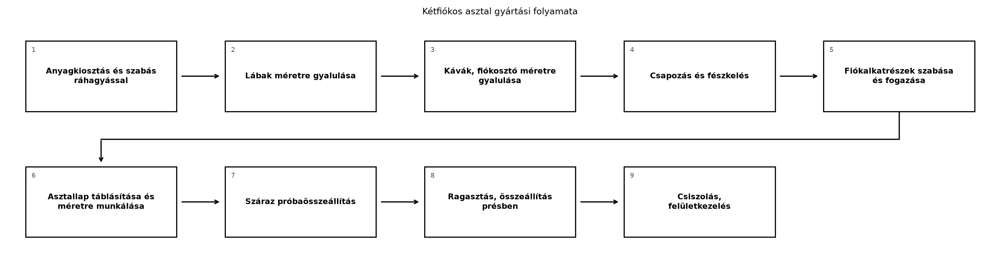

Egy megrendelő tömörfa, kétfiókos íróasztalt kér. Az asztal lapja bükk, a keret és a lábak is bükkből készülnek, a fiókok könnyen járjanak, és az asztallap ne repedjen meg az első fűtési szezonban. Ahhoz, hogy az asztal tartós és szép legyen, először papíron kell megtervezni: nézetrajz, metszetek, szabásjegyzék. A rajz után készül a műveletsor, és csak ezután jöhet a gépi munka.
Az Asztalok jellemző típusai és szerkezetei alfejezetben megismertük az asztalok fő szerkezeti csoportjait. A Fiókok és szekrényajtók szerkezete; fiókos éjjeliszekrény szerkezeti rajza alfejezetben a fiók részeit és méretezését tanultuk. Most ezt a két tudást kapcsoljuk össze egy konkrét, műhelyben legyártható asztalon.
Képzelj el egy 1100 mm széles, 700 mm mély asztalkeretet, amelynek laptetője 760 mm magasan van. A lap alatt négy láb áll, mindegyik 70 × 70 mm keresztmetszetű. A lábakat felül kávák kötik össze: hátul egy hátsó káva, két oldalt oldalkáva (mindkettő 100 mm magas), elöl pedig két keskeny homokléc, egy felső és egy alsó. A két homokléc között, a 100 mm-es kávasávban két fióknyílás van, középen egy függőleges fiókosztó választja el őket. Az asztallap (1160 × 760 mm) a kávákon fekszik, és mindenütt 30 mm-rel túlnyúlik a kereten, hogy szép árnyékéle legyen. Az 1100 × 700 mm tehát a keret mérete, nem a lapé. A káva alsó éle a padlótól 734 − 100 = 634 mm-en van, így az íróasztal térdtere szabad (legalább 620 mm).
A fiókok fecskefarkú fogazással kapcsolódnak az elülső fiókhomlokhoz. A fiókok sekélyek (tolltartó- és irattartó fiókok); oldalai tömör bükkből, a fiókfenék 6 mm-es rétegelt lemezből készül, mert a rétegelt lemez alig dolgozik a nedvesség hatására.
Definíció.
A fiókos asztal keretszerkezete olyan állványszerkezet,
amelyben a lábakat felül elülső felső és alsó homokléc, két
oldalkáva és hátsó káva köti össze. A kávák és a homoklécek
vésett csapozással ülnek a lábak fészkeiben. A két
homokléc közötti nyílásban helyezkedik el a fiók,
amelyet oldalt a fiókosztóra és az oldalkávára szerelt
futólécek vezetnek.
Definíció.
A középső fiókosztó (műhelyi nevén: fiókosztó léc) a
kétfiókos asztalban az elülső alsó homokléc és a hátsó káva közé,
elölről hátra, élével felfelé beépített elem, amely elválasztja a két
fióknyílást, és két oldalán egy-egy futólécet hordoz a fiókok
megvezetéséhez.
Definíció.
A fiókhomlok a fiók elülső, látható lapja. A
fiókoldal a fiók két hosszanti eleme, a
fiókhát a hátsó, keskenyebb elem. A
fiókfenék a fiók alját záró, általában rétegelt
lemezből készült lap.
Szabály.
A rajz–anyag–művelet hármas szerint először a rajzból készítünk
szabásjegyzéket, abból művelettervet,
és csak ezután kezdünk gépet állítani. Így elkerüljük az anyaghiányt és
a rossz műveleti sorrendből adódó hibákat.
A szerkezeti rajzot európai (E) vetítési rendben készítjük. Az elölnézet a fő nézet, alatta a felülnézet, bal oldalon az oldalnézet. A metszeteket mindig megnevezzük a metszősík betűjelével.
Elölnézet (a rajz fő nézete):
- A rajz bal oldalán és jobb oldalán egy-egy láb
látható, 70 mm széles, 734 mm magas (a padlótól a káva felső
síkjáig).
- A lábak között, a lábak elülső síkjával egy síkban két vízszintes
homokléc fut: a felső 20 mm, az alsó 20 mm magas,
mindkettő 22 mm vastag; közöttük a 100 − 2 · 20 = 60 mm magas sávban a
fióknyílások.
- A lábak közötti szabad szélesség 1100 − 2 · 70 = 960 mm. A középső
fiókosztó 22 mm széles függőleges sáv, így az egy
nyílás szélessége (960 − 22) / 2 = 469 mm. A fiókhomlokok befekvők, 465
mm szélesek és 56 mm magasak, 2 mm hézaggal körben.
- A felső homokléc felső éle egy vonalban van a lábak tetejével; erre
fekszik az asztallap, amelynek elülső kontúrja 26 mm
vastag és 1160 mm széles. A lap mindkét oldalon 30 mm-rel túlnyúlik a
lábak külső síkján.
Oldalnézet (jobbról balra nézve, azaz a jobb oldali
láb elé nézve):
- Látható a jobb oldali láb teljes profilja (70 × 70
mm), mögötte a hátsó láb szaggatott vonallal, mert
takarásban van.
- A két láb között az oldalkáva húzódik, 100 mm széles,
22 mm vastag.
- Az oldalkáva felső élére fekszik az asztallap oldalsó kontúrja, 26 mm
vastag.
- A fiók oldala az oldalkáva belső oldalán csavarozott futólécen fut, a
fiók elülső homloka felé; a fiókfenék szaggatott vonallal jelzi a fiók
alját.
Felülnézet (a rajz alatt, az E vetítés szerint az
elölnézet alatt):
- Az asztallap téglalapja 1160 × 760 mm.
- A kávák és a lábak a lap alatt szaggatott vonallal jelennek meg (a
keret 1100 × 700 mm).
- A keret a lap szélétől mindenütt 30 mm-rel beljebb van.
A–A függőleges metszet (a metszősík a fiók közepén,
az asztal mélység irányában, elölről hátra halad):
- A metszet mutatja a fiók felépítését: elülső
fiókhomlok (20 mm vastag), a mögötte lévő fiókhát (12 mm vastag), a
fiókfenék (6 mm rétegelt lemez) be van eresztve az oldalak
hornyába.
- A fiók mellett, a háttérben látszik a fiókosztó a
futólécekkel, amely az elülső alsó homokléc és a hátsó káva között
fut.
- A rajzon látszik a fiók és a nyílás közötti 2 mm-es
hézag, amelyet méretmegadással jelölünk.
B–B vízszintes metszet (a metszősík a káva felső
élénél, vízszintesen halad):
- A metszet a lábak, az elülső felső homokléc, a két oldalkáva
és a hátsó káva keresztmetszetét mutatja.
- A lábakban a kávák és a homoklécek csapjai láthatók,
a rajzon a csap hossza 20 mm, a fészekmélység 20 mm.
- A középső fiókosztó az elülső alsó homokléc és a
hátsó káva közé csapolódik (12 mm-es csappal), és a fióknyílást két
részre osztja.
- A metszetsraffozás a tömörfa rostirányát jelzi, a rétegelt lemez
fiókfenéknél a rétegfelépítést.
Ábraigény.
Cél: a kétfiókos asztal szerkezeti rajza, amelyből a tanuló le tudja
olvasni a fő méreteket, a csapozásokat és a fiók vezetését.
Ábrázolási mód: E vetítési rend, három nézet (elölnézet, oldalnézet,
felülnézet) és két metszet (A–A függőleges, B–B vízszintes).
Elemek és méretek (kész méretek, mm; a csapok a hosszba beleértve): láb
734 × 70 × 70 (4 db); elülső felső és alsó homokléc 1000 × 20 × 22
(vállméret 960 + 2 × 20 csap); oldalkáva 600 × 100 × 22 (2 db; vállméret
560 + 2 × 20 csap); hátsó káva 1000 × 100 × 22; fiókosztó 680 × 60 × 22
(vállméret 656 + 2 × 12 csap); futóléc 640 × 15 × 15 (4 db); fiókhomlok
465 × 56 × 20 (2 db); fiókoldal 500 × 46 × 12 (4 db); fiókhát 453 × 40 ×
12 (2 db); fiókfenék 488 × 453 × 6 rétegelt lemez (2 db); asztallap 1160
× 760 × 26; laprögzítő kapocs 8 db.
Anyagjelölés: tömör bükk – rostirány a hossz mentén, metszetben
sraffozás; rétegelt lemez – vékony rétegvonalak.
Feliratok és nyilak: a metszetek jelölése A–A, B–B; a fontos méretek
milliméterben, a csapozásnál a csaphossz és a fészekmélység; a káva alsó
éle a padlótól 634 mm.
Fekete-fehér nyomtatásban is olvasható: a sraffozás világos, a
kontúrvonalak vastagabbak.
Alt-szöveg: Kétfiókos tömörfa asztal szerkezeti rajza: elölnézet,
oldalnézet, felülnézet, A–A fiókmetszet és B–B kávametszet. A rajz a
lábak, kávák, homoklécek, fiókosztó, fiókok és az asztallap kapcsolatát
mutatja.
A szabásjegyzéket a szerkezeti rajz alapján készítjük. A kész méret a megmunkálás után elérendő méret, a nyers méret a fűrészelési ráhagyással növelt méret. A ráhagyás tájékoztató érték: hosszirányban 15 mm, szélességben 5–6 mm, vastagságban összesen 4–6 mm (oldalanként 2–3 mm), hogy legyen mit egyengetni és vastagságolni. A fiókfenékhez rétegelt lemezt használunk, amit nem kell gyalulni, csak szabni.
| Tétel | Megnevezés | Db | Anyag | Kész méret h × sz × v (mm) | Nyers méret h × sz × v (mm) | Szálirány / élzárás | Megjegyzés |
|---|---|---|---|---|---|---|---|
| 1 | Láb | 4 | bükk tömör | 734 × 70 × 70 | 750 × 75 × 75 | hosszirányú | csapfészek a láb felső részében |
| 2 | Elülső felső homokléc | 1 | bükk tömör | 1000 × 20 × 22 | 1015 × 25 × 28 | hosszirányú | vésett csap a végén; 960 + 2 × 20 |
| 3 | Elülső alsó homokléc | 1 | bükk tömör | 1000 × 20 × 22 | 1015 × 25 × 28 | hosszirányú | vésett csap a végén; 960 + 2 × 20 |
| 4 | Oldalkáva | 2 | bükk tömör | 600 × 100 × 22 | 615 × 106 × 28 | hosszirányú | vésett csap a végén; 560 + 2 × 20 |
| 5 | Hátsó káva | 1 | bükk tömör | 1000 × 100 × 22 | 1015 × 106 × 28 | hosszirányú | vésett csap a végén; 960 + 2 × 20 |
| 6 | Fiókosztó | 1 | bükk tömör | 680 × 60 × 22 | 695 × 66 × 28 | hosszirányú | 656 + 2 × 12 csap; a fiókok közé |
| 7 | Futóléc | 4 | bükk tömör | 640 × 15 × 15 | 655 × 20 × 20 | hosszirányú | az osztóra és az oldalkávára csavarozva |
| 8 | Fiókhomlok | 2 | bükk tömör | 465 × 56 × 20 | 475 × 61 × 24 | hosszirányú | fecskefarkú fogazáshoz; befekvő, 2 mm hézag |
| 9 | Fiókoldal | 4 | bükk tömör | 500 × 46 × 12 | 510 × 51 × 16 | hosszirányú | horony a fenéknek |
| 10 | Fiókhát | 2 | bükk tömör | 453 × 40 × 12 | 463 × 45 × 16 | hosszirányú | 441 + 2 × 6 (az oldalak hornyába) |
| 11 | Fiókfenék | 2 | rétegelt lemez | 488 × 453 × 6 | 493 × 458 × 6 | – | behornyolt; 441 + 2 × 6 |
| 12 | Asztallap | 1 | bükk, táblásított | 1160 × 760 × 26 | 1180 × 780 × 32 | hosszirányú | mozgásbiztos rögzítés a kávákhoz |
| 13 | Laprögzítő kapocs | 8 | fém | gyártó szerint | – | – | Z-kapocs a kávák hornyába |
A fiók külső szélessége 465 mm, az oldalak 12 mm vastagok, így a belső szélesség 465 − 24 = 441 mm, a fenék a hornyokkal 441 + 2 · 6 = 453 mm széles. A szabásjegyzékben minden méret mm-ben értendő. A rajzon a mm-t nem írjuk ki, de a jegyzékben feltüntetjük. A fa mozog elv miatt a széles asztallapot nem egy darabból, hanem táblásított, keskeny lécekből ragasztjuk, mert a széles tömör lap erősen dolgozik.
A gyártás folyamata a rajz–anyag–művelet hármas szerint:

A műveletsor röviden:
Technológiai lap.
Cél: kétfiókos, tömör bükk íróasztal elkészítése a szabásjegyzék
szerint.
Anyagok: bükk fűrészáru, 6 mm rétegelt lemez, D3
PVAc ragasztó, csiszolóvászon, felületkezelő anyag (pl. bútorolaj vagy
PU lakk – a gyártói adatlap szerint).
Gépek és szerszámok: asztalos körfűrészgép, egyengető
gyalugép, vastagsági gyalugép, asztalos marógép (alsómaró),
hosszlyukfúró, csapozó marógép vagy fűrész, szalagcsiszoló,
derékszögelő, mérőszalag, tolófa, szorítók, laphámozó, ecset vagy
szórópisztoly.
Gépbiztonság.
A gépi műveletet csak betanított, felügyelt tanuló végezheti.
Védőberendezés nélkül, egyedül, fáradtan ne dolgozz! A körfűrészen
mindig használj hasítóéket, védőburkolatot és tolófát. Az egyengető
gyalugépen a késtengelyt védőburkolat takarja, a kézvédőt mindig a
munkadarab fölött vezesd. A marógép szerszámvédő burkolatát ne szereld
le. Viselj védőszemüveget, hallásvédőt, és ha a porelszívás nem teljes,
FFP3 (keményfapor) légzésvédőt (ellenőrizendő: kockázatértékelés). A
hosszú, bő ruházat, ékszer, kesztyű a forgó szerszámnál tilos. A gépet
mindig az indítás előtti ellenőrzéssel kezdd.
Indítás előtti ellenőrzőlista:
- A szerszám éles, repedésmentes, a rögzítőanya megfelelően
meghúzva.
- A fordulatszám a szerszám gyártói előírásán belül van.
- A védőburkolatok, hasítóék, tolófa a helyén.
- Az elszívó berendezés bekapcsolt.
- A munkadarabon nincs szeg, kő, laza göcs.
- A munkaterület szabad, a vészleállító elérhető.
Lépések:
A kész asztalt 24 órán át hagyd száradni, mielőtt megterhelnéd.
A kész asztalt a következő szempontok szerint ellenőrizzük:
| Ellenőrzési pont | Módszer / eszköz | Tájékoztató tűrés |
|---|---|---|
| A keret derékszöge | derékszögelő, átlómérés | átlók eltérése ≤ 1 mm |
| A lábak síkban állnak | sima asztallapra állítás | nem billeghet, rés ≤ 0,5 mm |
| A fiók járása | kézi mozgatás | egyenletes, akadás nélkül, oldalhézag 1–2 mm |
| A fiók homlok illeszkedése | szemrevételezés, hézagmérő | a rés a fiók körül egyenletes, ≤ 2 mm |
| Az asztallap síkossága | egyenes vonalzó | maximális eltérés 0,3 mm 500 mm-en (tájékoztató) |
| A lap rögzítése | kézi nyomás | a lap kissé dolgozhat, a csavarok nem feszülnek |
| A felület minősége | szemrevételezés, tapintás | nincs csepegés, folyás, matt folt |
Ha eltérést találsz, a hibát a felületkezelés előtt javítsd: a szoruló fiókot gyaluld utána, a ragasztófolyást csiszold le, a billegő lábat igazítsd meg.
Hiba. A fiók szorul, nehezen jár.
Ok. A fiók oldala és a káva között nincs elég hézag,
vagy a fa a nedvesség hatására megdagadt.
Helyes gyakorlat. A fiók oldalait a szélességben és a
magasságban is 1–2 mm-rel kisebbre készítjük (a magasságban 2–3 mm
hézag), a futófelületet viaszoljuk vagy szappanozzuk.
Hiba. Az asztallap megreped a fűtési
szezonban.
Ok. Az asztallapot mereven, több csavarral rögzítették
a kávákhoz, és a fa zsugorodásakor nem tudott mozogni.
Helyes gyakorlat. A lapot
mozgásbiztosan kell rögzíteni: fém Z-kapoccsal a kávák
hornyába, a lap középvonalán fix ponttal, a többi ponton mozgást engedve
(lásd: Asztalok jellemző típusai és
szerkezetei). Így a lap dolgozhat.
Hiba. A keret csavarodott, az asztal billeg.
Ok. A préseléskor nem ellenőrizték a derékszöget, vagy
a lábak nem egy hosszúak.
Helyes gyakorlat. A lábakat pontosan egy méretre
gyaluljuk, préseléskor a két átlót megmérjük.
Hiba. A fecskefarkú fogazásnál a csapok nem
illeszkednek, rések látszanak.
Ok. A sablon beállítása pontatlan volt, vagy a marószár
nem merőleges a munkadarabra.
Helyes gyakorlat. A beállítást
próbadarabon ellenőrizzük, mielőtt a tényleges
alkatrészt marjuk.
Egy asztalos tanuló kétfiókos asztalt készített vizsgaremeknek. A próbaösszeállításkor minden illeszkedett, de a kész asztalnál a fiókok nyáron szorultak. A hiba oka az volt, hogy a tömör bükk fiókoldal és -homlok magassága (rostra merőleges irány) nyáron megdagadt, és a fiók a nyílásban függőlegesen beszorult; a fiókot nem a beépítés helyének egyensúlyi nedvességére szárított fából készítette. A javításkor a fiók magasságát 2 mm-rel csökkentette, a futófelületet viaszolta. A tanulság: a fióknál a magasságban is hagyjunk 2–3 mm hézagot, és számoljunk a fa mozgásával a rostra merőleges irányban.
Számítás.
Készítsük el a kétfiókos asztal anyagszükségletét és önköltségét. A
mintaárak tájékoztató jellegűek, a tényleges árakat a beszerzéskor kell
ellenőrizni.
A szabásjegyzék nyers méreteiből számolunk. A térfogat:
ahol a méreteket méterben helyettesítjük be.
A tömör bükk összesen:
Kerekítve: kb. .
Ellenőrzés: a lábak és a lap adják a legnagyobb térfogatot; a kapott érték reálisan 60 liter körüli faanyag.
A fiókfenék rétegelt lemezből készül, nyers méret: , kerekítve .
Minta egységárak (mintaár, a beszerzés előtt ellenőrizendő):
| Tétel | Mennyiség | Egység | Egységár (Ft/egység, minta) | Érték (Ft) |
|---|---|---|---|---|
| Bükk fűrészáru | 0,0605 | m³ | 320 000 | 19 360 |
| Rétegelt lemez 6 mm | 0,45 | m² | 9 000 | 4 050 |
| D3 PVAc ragasztó | 0,4 | kg | 3 500 | 1 400 |
| Felületkezelő anyag | 0,6 | l | 7 000 | 4 200 |
| Csiszolóanyag, vasalat | 1 | csomag | 2 500 | 2 500 |
| Laprögzítő Z-kapocs | 8 | db | 150 | 1 200 |
| Közvetlen anyagköltség | 32 710 |
A gyártási idő becslése 14 óra (tájékoztató érték, a tanuló gyakorlottságától függ). A minta órabér .
A közvetlen költségek összesen:
Az általános (rezsi) költség a közvetlen bérköltség 18%-a (mintaadat):
Az önköltség:
A vállalkozó 12% nyereséget szeretne (mintaadat):
A termelési (nettó) ár:
ÁFA (27%, ellenőrizendő):
A bruttó eladási ár:
Ellenőrzés: az anyagköltség kb. 33 ezer Ft, a bér 70 ezer Ft; a rezsi és nyereség együttesen kb. 27 ezer Ft; az ár nagyságrendileg reális egy egyedi tömörfa asztalnál.
1. feladat (A)
Nevezd meg a kétfiókos asztal szerkezeti részeit a szabásjegyzék
alapján!
2. feladat (A)
Milyen anyagból készítenéd a fiókfeneket? Indokold a választásod a fa
mozgása és a méretstabilitás szempontjából.
3. feladat (B)
Számítsd ki a két oldalkáva és a hátsó káva összes tömörfa-térfogatát
m³-ben! A nyers méretek: oldalkáva
,
hátsó káva
.
4. feladat (B)
A szabásjegyzékben a fiókhomlok kész mérete
,
nyers mérete
.
Mennyi a ráhagyás hosszban, szélességben és vastagságban? Miért van
szükség rá?
5. feladat (C)
Tervezd meg a fiók vezetését! Válassz a fa futósín és a fém golyós sín
közül egy tömörfa íróasztalhoz, és indokold a választásod 3–4
mondatban.
6. feladat (D)
Készíts műveletsort a fiók elkészítéséhez a következő lépésekből, helyes
sorrendben: csapozás, csiszolás, anyagkiosztás, ragasztás, horonymarás a
fenéknek, próbaösszeállítás. Minden gépi művelethez írd oda, melyik
védőberendezést használod.
Önellenőrzés – válaszok
1. feladat megoldása
A részek: lábak (4 db), elülső felső és alsó homokléc, két oldalkáva,
hátsó káva, középső fiókosztó, futólécek, fiókhomlokok (2 db),
fiókoldalak (4 db), fiókhátak (2 db), fiókfenekek (2 db), asztallap,
laprögzítő kapcsok (8 db).
2. feladat megoldása
A fiókfeneket 6 mm-es rétegelt lemezből készítjük, mert
a rétegelt lemez a páratartalom változására alig dolgozik, így a fiók
nem szorul, és a fenék nem hullámosodik. Tömörfa fenék esetén a dagadás
miatt a fiók beszorulhat.
3. feladat megoldása
Oldalkávák:
.
Hátsó káva:
.
Összesen:
.
4. feladat megoldása
Hossz:
(5 mm mindkét végén).
Szélesség:
(2,5 mm oldalanként).
Vastagság:
(összesen, 2 mm laponként).
A ráhagyás azért kell, hogy a gyalulás és szabás során a pontatlan
fűrészvágást és a fa esetleges vetemedését korrigálni lehessen, és a
végső méret pontos legyen.
5. feladat megoldása
Tömörfa íróasztalhoz fa futósín vezetést választok,
mert:
- esztétikailag illeszkedik a tömörfa bútorhoz;
- nem kell fém alkatrész, ami zöröghet;
- a fa futósín jól csúszik viaszolás után;
- a fiók teljes kihúzását nem igényli, és a hagyományos asztalos
szerkezethez jobban illik.
A fém golyós sín akkor lenne jobb, ha nagy terhelésű, gyakran teljesen
kihúzott fiók kellene.
6. feladat megoldása
Helyes sorrend:
1. Anyagkiosztás (körfűrész – hasítóék, védőburkolat, tolófa).
2. Csapozás (csapozó maró – szerszámvédő burkolat, elszívás).
3. Horonymarás a fenéknek (asztalos marógép – védőburkolat,
elszívás).
4. Próbaösszeállítás (kézi szerszámok – nincs gépi művelet).
5. Ragasztás (prés, szorítók – vegyszeres kesztyű, szellőzés).
6. Csiszolás (szalagcsiszoló – porelszívás, FFP3 maszk).
Ebben az alfejezetben a fiókos asztal szerkezeti rajzát és gyártástechnológiáját tanultuk meg. A kétfiókos asztal fő részei: lábak, elülső homoklécek, oldalsó és hátsó kávák, középső fiókosztó, fiókok és az asztallap. A kávák és a homoklécek vésett csappal csatlakoznak a lábakba, a fiókhomlokokat fecskefarkú fogazással kapcsoljuk a fiókoldalakhoz. A fiókfenék rétegelt lemezből készül, hogy ne dolgozzon. Az asztallapot táblásítjuk, és Z-kapoccsal mozgásbiztosan rögzítjük a kávákhoz, különben a fa mozgása repedést okoz. A gyártás sorrendje: szabás, gyalulás, csapozás, fészkelés, fiókgyártás, lap táblásítása, próbaösszeállítás, ragasztás, csiszolás, felületkezelés. A szabásjegyzékből anyagmennyiséget és költséget számolunk. Továbbvitt eredmény. Ezt a műveletsort, anyagnormát és időbecslést használjuk fel a A gyártási folyamat megtervezése: műveletterv, gépválasztás, időnorma, ütemezés alfejezetben, ahol a teljes gyártást előkalkuláljuk.
Felhasznált forrástípusok: faipari szakrajzi és
technológiai szakkönyvek, gyakorlati műhelytapasztalatok, MSZ EN 204
ragasztó-vízállósági osztályok, faanyag-szárítási ajánlások, gyártói
adatlapok.
Ellenőrizendő pontok: a D3 ragasztó beltéri asztalhoz
való megfelelősége (MSZ EN 204 szerint), a fanedvesség célértéke (8 ± 2
%), a fiók oldalhézag pontos értéke, a szociális hozzájárulási adó
aktuális mértéke, az ÁFA kulcsa, a mintaárak és a felületkezelő anyag
gyártói előírásai.